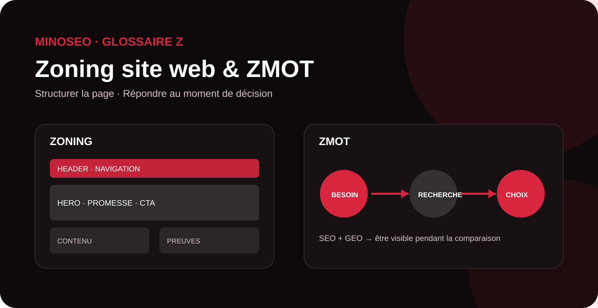

La lettre Z réunit ici deux concepts utiles à une stratégie digitale moderne. Le zoning site web intervient en amont du design pour organiser les grandes zones d’une page et hiérarchiser l’information. Le ZMOT, ou Zero Moment of Truth, décrit le moment où un consommateur recherche des informations en ligne avant de prendre une décision. Pour le SEO et le GEO, ces notions rappellent une même priorité : proposer la bonne information, au bon endroit et au bon moment.

zoning site web
Le zoning site web est une étape de conception qui consiste à découper une page en grandes zones fonctionnelles avant de travailler son habillage graphique détaillé. On représente généralement le header, la zone héro, les blocs de contenu, les preuves de confiance, les appels à l’action, les éventuelles colonnes latérales et le footer sous forme de rectangles simples.
L’objectif n’est pas encore de choisir les couleurs ou les photographies. Il s’agit d’abord de décider quelle information doit apparaître, dans quel ordre et avec quelle importance. Le zoning sert ainsi de pont entre l’arborescence du site, la stratégie de contenu et les étapes plus détaillées de wireframing et de maquettage.
Quel intérêt pour le SEO et le GEO ?
Le zoning n’est pas un facteur de classement direct. Il peut toutefois faciliter une architecture éditoriale plus cohérente : un H1 clairement identifiable, des sections H2/H3 logiques, des réponses importantes suffisamment visibles, des liens internes placés dans leur contexte et des CTA qui ne perturbent pas la lecture. Cette organisation aide aussi les rédacteurs à traiter l’intention de recherche sans disperser les informations essentielles.
Dans une logique GEO, le même principe est utile : chaque zone doit porter une fonction informationnelle claire. Définitions, caractéristiques, preuves, données factuelles, questions fréquentes et informations sur l’entreprise gagnent à être structurées de façon explicite afin d’être plus faciles à interpréter par les utilisateurs, les moteurs et les systèmes d’IA.
Zoning, wireframe et maquette : quelle différence ?
Le zoning définit les grandes zones et leur ordre. Le wireframe précise davantage les composants, leurs dimensions et leurs interactions. La maquette ajoute ensuite l’identité visuelle : couleurs, typographies, images et détails graphiques. Cette progression évite de résoudre des problèmes de structure lorsque le design est déjà finalisé.
ZMOT
ZMOT signifie Zero Moment of Truth, ou « moment zéro de vérité ». Google a popularisé ce concept en 2011 pour décrire une évolution du parcours d’achat : avant de se rendre en magasin, de contacter une entreprise ou de finaliser un achat, le consommateur utilise le web pour chercher, comparer, consulter des avis et se renseigner.
Le ZMOT se situe donc en amont de la décision. Une personne peut effectuer plusieurs recherches, consulter une fiche locale, lire un guide, regarder une vidéo, comparer des offres ou demander une synthèse à un assistant IA. Chaque point de contact contribue à former sa perception d’une marque avant l’action commerciale proprement dite.
Pourquoi le ZMOT est-il important en SEO et GEO ?
Le SEO permet à une marque d’être présente lorsque l’utilisateur formule ses questions dans un moteur de recherche. Le GEO étend cette logique aux environnements où une IA génère directement une réponse, une comparaison ou une recommandation. Dans les deux cas, l’enjeu consiste à produire des contenus qui répondent aux questions réellement posées pendant la phase de découverte et d’évaluation.
Une stratégie orientée ZMOT ne doit donc pas se limiter aux requêtes transactionnelles. Les contenus de définition, guides comparatifs, cas clients, FAQ, démonstrations, informations tarifaires transparentes et preuves d’expertise peuvent intervenir bien avant la conversion. La cohérence des informations diffusées sur le site et les autres présences numériques contribue également à rassurer l’utilisateur.
Comment travailler son ZMOT ?
Commencez par cartographier les questions posées avant l’achat : « comment choisir », « quelle différence », « combien coûte », « quels avantages », « quels risques » ou encore « quelle solution pour… ». Associez ensuite chaque intention à un contenu précis et mesurez les résultats avec des indicateurs adaptés : visibilité organique, clics, engagement, demandes de contact et conversions assistées.
Tableau de synthèse : les notions en Z
| Terme | Définition courte | Enjeu SEO / GEO |
|---|---|---|
| Zoning site web | Découpage préalable d’une page en grandes zones fonctionnelles. | Clarifier la hiérarchie de l’information, le parcours de lecture, le maillage et les CTA. |
| ZMOT | Moment où le consommateur recherche et compare des informations avant sa décision. | Être visible et crédible pendant les phases de découverte, d’évaluation et de comparaison. |
Transformez vos contenus en points de contact utiles
MinoSeo accompagne les entreprises en SEO, GEO, contenu et netlinking pour structurer leurs pages, répondre aux intentions de recherche et renforcer leur visibilité dans les moteurs et les réponses IA.
Demander un audit gratuit